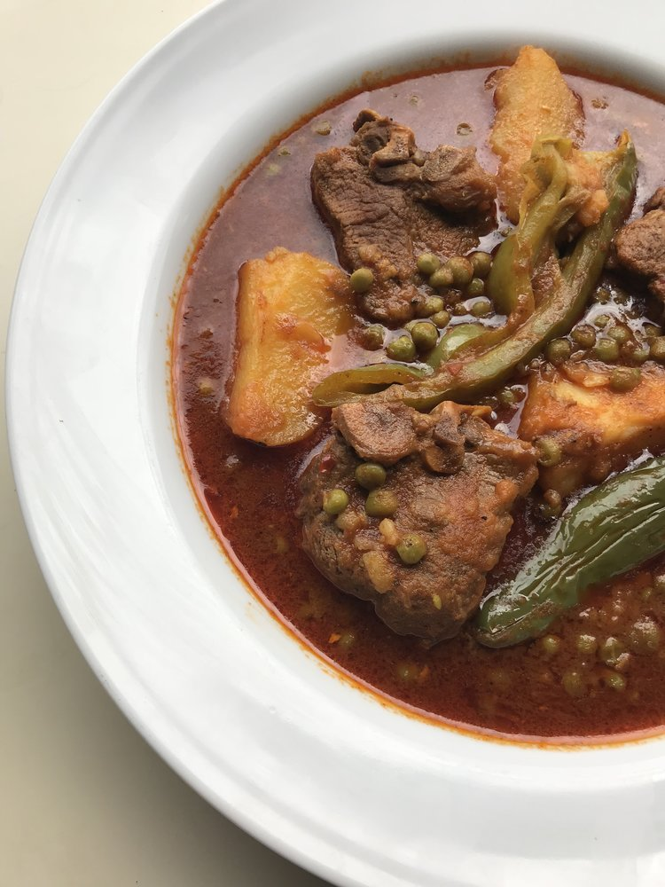

Market Jelbana Recipe

Description
This dish originates from Northern Africa as it is a Tunisian dish, they make this pea stew during the winter as the peas are just in season. I had this for the first time in Tunisia and I have loved this recipe ever since. Here are the ingredients you will need and the very simple method:
Ingrediants
- Olive Oil (to oil pot)
- 1 large onion and half of another
- Meat of your choice ( Beef, lamb ,chicken etc..)
- Water (for broth)
- 1 tbsp tomato purée
- 1 tsp turmeric
- 1 tsp chilli powder ( or more depending on how spicy you want it)
- Handful of parsley
Method:
- Dice one large onion and slice 1/2 of another onion which you will need later. Next, oil a pot with olive oil to sauté the meat and diced onions for 5 minutes, just until the onions are nice and translucent (You can add salt at this point)
- After 5 minutes add 2 cups of water into the pot (the amount of water you will need depends on how much meat you put in, just make sure the water in covering the meat as this is what will cook the inside of your meat)
- If you are using a pressure cooker you can let the meat cook in the water for about 15 minutes, but in any case allow it to cook until it is nice and soft on the inside
- Once your meat in finally cooked add the tomato purée, the harissa, the turmeric and the chilli powder, mix it around to make sure it dissolves in the water
- Let it sit for 2 minutes before adding the peas, the 1/2 of another onion and freshly washed parsley.
- Add salt if needed and serve nice warm
This Tunisian dish is usually served with bread but feel free to eat it however you like. Hope you like this recipe as much as I do! If you have made this before, what family secret ingredients do you add into this? Otherwise you are welcome to comment down below any meal suggestions you may have…
Return